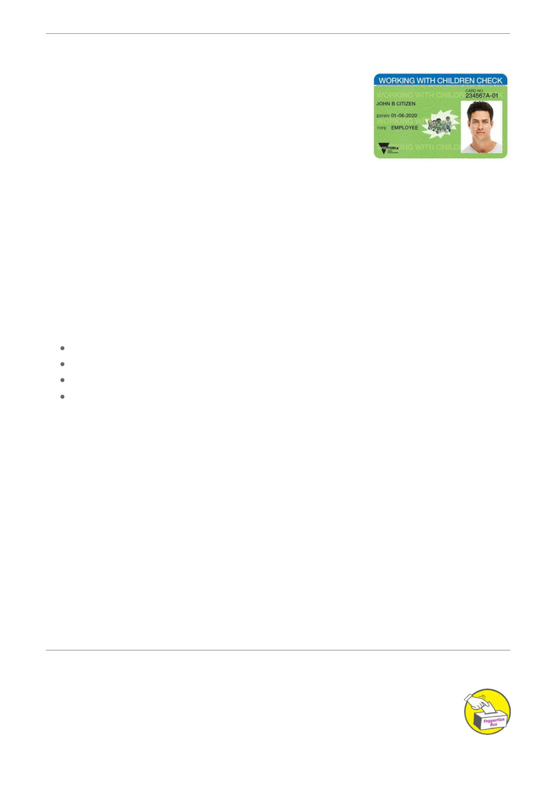

Free Volunteer Working with Children Check
While most of our members will never need a Working with Children
Check (WWCC), having one can make a big difference to our club's
ability to participate in community events, field days, agricultural
shows and other public activities.
Many event organisers now require volunteers working at their
venues to hold a current WWCC. Like most community clubs, we rely
heavily on members who generously volunteer their time. Quite
simply, without volunteers, there is no club.
That's why we're asking members to consider applying for a Volunteer Working with Children
Check. The good news is that the volunteer check is free, easy to apply for, and can help ensure we
have enough approved volunteers available whenever opportunities arise.
What is a Working with Children Check?
The Working with Children Check is a Victorian Government screening process that assesses
people who work with or care for children. Successful applicants receive a WWC Clearance,
confirming they have passed the required checks.
As part of the assessment process, the Screening Unit considers:
Criminal history
Certain court orders
Relevant findings made by professional disciplinary bodies
Other information relevant to child safety, including allegations of abuse or misconduct
involving children
Why Apply?
Even if you don't regularly volunteer at events, having a WWCC means you can step in when
needed and help represent the club at community activities. The more members who hold a current
clearance, the easier it is for the club to participate in events, promote our activities, and support our
local community.
Please consider applying for a free Volunteer Working with Children Check today. It only takes a
little time, costs nothing, and helps ensure our club can continue to be visible, active and successful
in the community.
More volunteers with a WWCC means more opportunities for our club. Thank you for helping keep
our club strong.
Apply here: Working with Children Check
Our Club Details: ABN 78 458 483 110 - P.O. BOX 401, Geelong. VIC 3220
Suggestions?
Articles of interest are always welcome.
If you have an article of interest, a photo or a story that you would like included in the
next newsletter, please email: info@gbkc.au